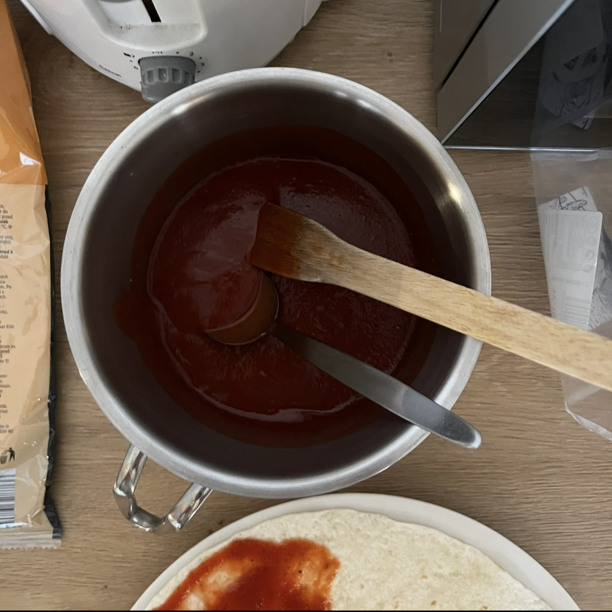
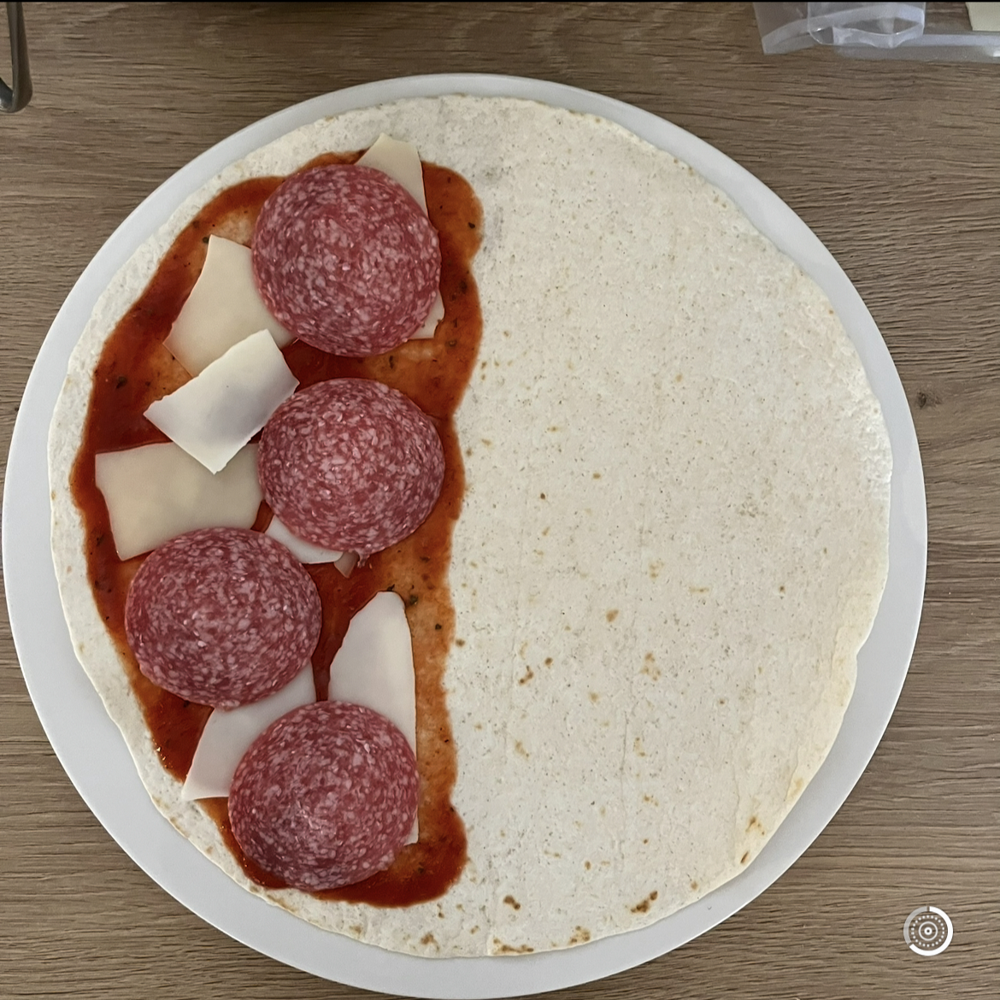
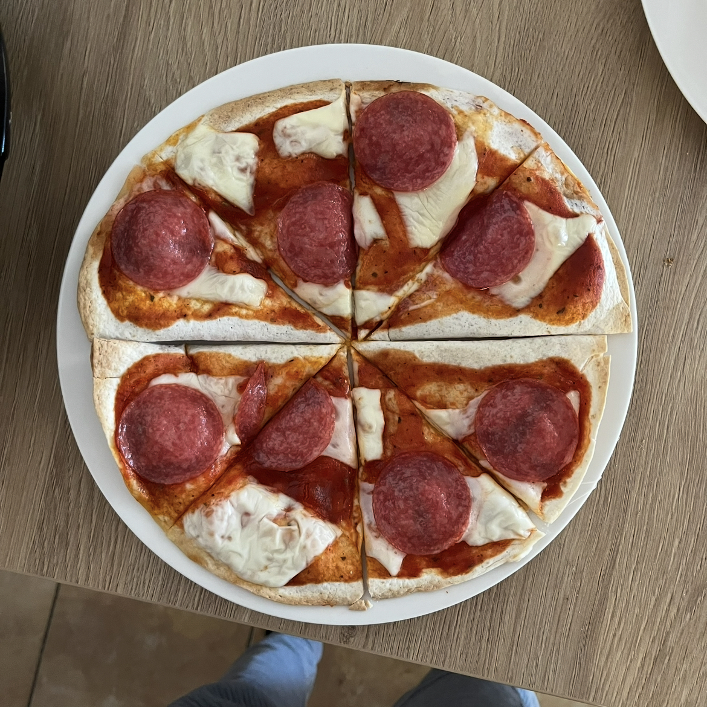

Domáca tortilová pizza


Postup:
-

Najprv si zohrejeme paradajkovú omáčku, pridáme trošku soli, oregána a ďalšieho korenia podľa chuti. Môžeme pridať aj trochu mlieka, kečupu alebo sirachu.
-

Vytvorenú omáčku dáme na polovicu tortily a na ňu dáme 4 koliečka salámy a jeden plátok roztrhaného syru. Následne tortilu preložíme a zopakujeme. Celý tento proces zopakujeme ešte raz pre druhú polovicu našej domácej pizze.
-

Vložíme do trúby na 8 minút na 200 stupňov a podávame.
Tipy a triky:
-
Pridanie sirache dodá štipľavú chuť.
-
Vyberte si rôzne druhy salámy či syru, prípadne vynechajte a pridjte vlastné ingrediencie podľa uváženia.
-
Pre airfryer dajte pizzu na 5 minút na 180 stupňov.